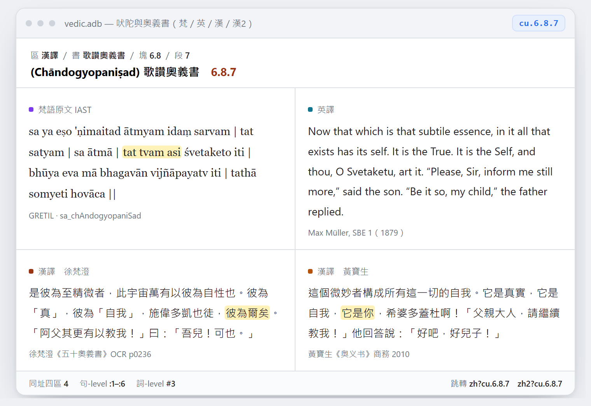

邀請函
校讀《大林間奧義書》第六品的地址對應
尊敬的聞中老師：
您好。
我是魏秀秀，正在整理「吠陀與奧義書三語平行語料」。久仰老師在印度哲學與梵學領域的學養，尤其是對吠檀多與近現代印度思想的通貫理解；冒昧來信，是想請您撥冗看一看一批數量不大、但我們自己已經沒有把握判定的段落。
事情的起因很具體：這個專案做到現在，全庫只有一處曾經「知道它錯、卻不敢自己改」的地方，而它恰好落在徐梵澄與黃寶生兩位先生對同一段梵語的處理差異上。日前我們用黃譯的頌界當錨，把它逐頌改完了——但那是我們自己的判讀，改得對不對，我沒有把握，所以想請您核一核。若您看過後認為這件事另有更合適的請益對象，也懇請告知。
一、我們在做什麼
這個專案把吠陀與奧義書的梵語原文、英譯、漢譯按同一套地址（bu.6.3.1＝書.品.婆羅門書.頌）並排，做成可直接跳轉檢索的離線資料庫，供閱讀與研究引用。
目前規模：14 部書、333 塊（品／節）、2,439 段。梵語面完成 99.8%，英語面 98.8%；漢譯面以徐梵澄《五十奧義書》為主體（1,678 段，68.8%），並於近日新增黃寶生《奥义书》（商務印書館 2010）作為並列的第二漢譯區（1,676 段），方便對讀兩個譯本。
所有來源、授權與缺口原因都逐項記錄，可以隨時核查，不敢含糊。

cu.6.8.7（「彼為爾矣」／tat tvam asi）在四區並列。圖中的文字是資料庫的實際內容，不是示意文案；閱讀器為 Windows 單機程式，離線可用。二、它現在能拿來做什麼
並排只是形式，真正有用的是它可以讓兩個傳統的文本直接對照。下面兩條都出自專案已建置的部分，地址、出處都可查。
rv.10.90.12 四姓由何而生《梨俱吠陀》10.90.12（原人歌） brāhmaṇo 'sya mukham āsīd bāhū rājanyaḥ kṛtaḥ / ūrū tad asya yad vaiśyaḥ padbhyāṃ śūdro ajāyata——婆羅門是他的口，剎帝利由他的臂而成，吠舍是他的腿，首陀羅從他的足生出。
同址所配的漢譯《起世經》T01n0024 卷十 「此三種姓，世間生已，於後復有第四種姓，世間出生。……有一種人，各自毀呰其家本法，剃除鬚髮，著袈裟衣，棄捨世間，出（家修道）。」
吠陀的第四姓是首陀羅；佛教的第四姓被改寫成沙門，而且沒有首陀羅。同一組「四姓」框架，兩邊填的內容不同——這種差異用一條並排就能看出來。
rv.10.129.7 「誰知道呢」與「無記」《梨俱吠陀》10.129.7（有無歌） … so aṅga veda yadi vā na veda——「他也許知道，也許不知道」。
同址所配的漢譯《中阿含》221 經（箭喻經） 「所謂此見，世尊捨置除却，不盡通說，謂世有常，世無有常……」
兩處都是「不給答案」，但理由並不相同：奧義書停在認識論的謙卑（連「他是否知道」都無法斷定），佛教則以此問無益而捨置。這一條在專案裡標為「中等可信」，因為它是主題平行而非同源——我們把「像」與「是」分開標示。
這類對照目前有 21 條，每條都標了出處與可信度；查無實據的也照實留著，不湊數。
順帶一提：Aitareya 奧義書的第二、三章（胎藏三生、prajñānaṃ brahma 一節）過去只收了第一章，日前也補進來了——sa au.3.1.3 現在讀得到 「…prajñānaṃ brahma」，黃譯作「智慧即梵」。這是四大名句裡本庫原本缺的一句。
三、需要您看的，只有一段
全庫目前唯一「已知是錯、而非只是缺」的地方，是徐梵澄譯《大林間奧義書》第六品的頌號對應。原因是徐先生的章節切分比梵語本晚，加上當年的自動切分按頁序硬切：
| 現象 | 實測 |
|---|---|
| 徐譯「第三婆羅門書」印在 zh 6.3.12，但它其實是梵語 6.3.1 | 偏移 11 段 |
| 徐譯「第四婆羅門書」印在 zh 6.4.15，但它其實是梵語 6.4.1 | 偏移 14 段 |
zh 6.1.1–6.1.8 與 zh 5.14.1–8 是同幾頁（p0639–p0643）的重複讀取 | 8 列重複 |
| 徐譯 6.1.7–6.1.9（交諍、語言、眼）只存在於 OCR p0645，沒進資料庫 | 少 3 頌 |
| 徐先生自己刪去 12 頌（原書標「删」「下略」，p0659、p0660、p0662） | 12 頌無文 |
我們試過三條自動化的路——按 OCR 頌號指派、以黃譯當錨做序列對齊、從 OCR 整章重建——結果都不夠可靠（頌號 OCR 殘缺、兩個譯本用詞差異大、譯註與頁碼混進正文）。最後是靠黃譯的頌界逐頌核對，才把 75 列一次改完。但這是我們兩個人的判讀，不是學術定論。
四、我們做了五個判斷，請您核可或否決
- 重複頁：
zh 6.1.1–6.1.8與5.14.1–8是同幾頁（p0639–p0643）的兩次讀取。我們刪去這 8 列，保留5.14現有的文字（第二次讀得較完整，但缺了梵語轉寫，取其一致）。 - 漏收的三頌：
zh 6.1.7–6.1.9（交諍、語言、眼）只存在於 OCR p0645。我們已抄出補入，明顯的 OCR 誤字（日→曰、人→入）就地改正，並在資料裡標「OCR 未校」。 - 6.3–6.4 的對位：16 列依黃譯頌界對到梵語 13 頌。其中徐先生把「舉而祝之」與《薩維特利》頌的次序處理得與梵語本不同，我們把
6.3.6收了兩列（地／空 與 天），6.3.5單獨一列。 - 徐先生自刪的 14 頌（原書標「删」「下略」，p0659–p0662）：漢譯欄如實留缺，由並列的黃譯補足，不混合兩個譯者。
- 一列含兩頌（原
6.3.13同時含偈頌與灌獻清單）：我們在句界切開，分置6.3.1與6.3.2。
改完後可抽查：zh 6.3.1 開頭是「第三婆罗门书：有愿望……」，zh 6.4.1 開頭是「第四婆罗门书：唯然！众生之真元，地也……」。哪一條您認為判錯了，告訴我們，我們改回來——這比從頭重做省事得多。
另一項代價也要向您說明：改完之後 bu 的漢譯由 436 段降為 422 段（缺 15），因為徐先生沒譯的地方現在如實留白了。全庫漢譯覆蓋率因此由 69.7% 降為 68.8%。我們認為誠實的缺比錯位的滿好，但這也是一個可以商量的判斷。
五、工作量與節奏
- 範圍：約 75 列，全部集中在《大林間奧義書》第六品；每一列只需對讀三個版本（梵語、徐譯、黃譯）。
- 估計：6–10 小時，可依您的時間分兩三次進行，不必連續。
- 形式：我們會先把 75 列整理成一份表格（地址｜梵語｜徐譯｜黃譯，四欄並排），您可以離線看，只需標「對／不對／應改為某址」；需要時也可以線上會議逐段過。
- 我們會把既有判讀、頁碼證據與已知陷阱一併附上，避免您重複踩我們踩過的坑。
六、署名與授權
- 校讀意見會在專案文件中具名記錄（或依您的意願匿名）。
- 若您同意，也可以在資料庫的書誌資訊裡列為學術顧問。
- 本專案目前是私人研究，沒有散布計劃，資料只在個人工作環境中使用；因此您不必顧慮授權或再散布的問題。來源仍逐項標明（CBETA 為 CC BY-NC-SA；徐、黃兩家譯本為著作權內，僅作研究對讀）。校讀不涉及任何授權變更。
七、不需要您做的事
- 不需要翻譯。要判斷的是「哪一列對應哪一頌」，不是重新譯一遍。
- 不需要處理全部缺口。漢譯面其餘 737 段缺口（其中 722 段是《梨俱吠陀》無公版漢譯）不在本次範圍。
- 不必承諾長期參與；這一輪做完即可，之後有需要再請教。
八、聯絡
如您願意，回覆這封信即可，我會把表格與相關檔案（含 75 列的對讀表）寄上。
無論如何，感謝您讀到這裡。
順頌 研安
隨信附上的材料
皆為研究對讀用，不作散布。
| 材料 | 內容 |
|---|---|
| 多語平行語料庫對義理研究的用處（線上短文） | 給義理研究者：三語同址可以問什麼，附三個例子（ātman、tat tvam asi、na … prajñam） |
| 對讀表（75 列） | 地址｜梵語｜徐譯｜黃譯 四欄並排，可直接在上面標註 |
| 偏移證據節錄 | 偏移的完整證據、三條自動化路線的實測與失敗原因 |
| 對齊問題總述節錄 | 漢譯對齊問題總述（塊級可信、段級須核） |
| 來源與授權節錄 | 各來源、版本、授權狀態 |
若您需要看某幾段的原始出處（OCR 頁碼、梵語本行號），我可以逐段補上。